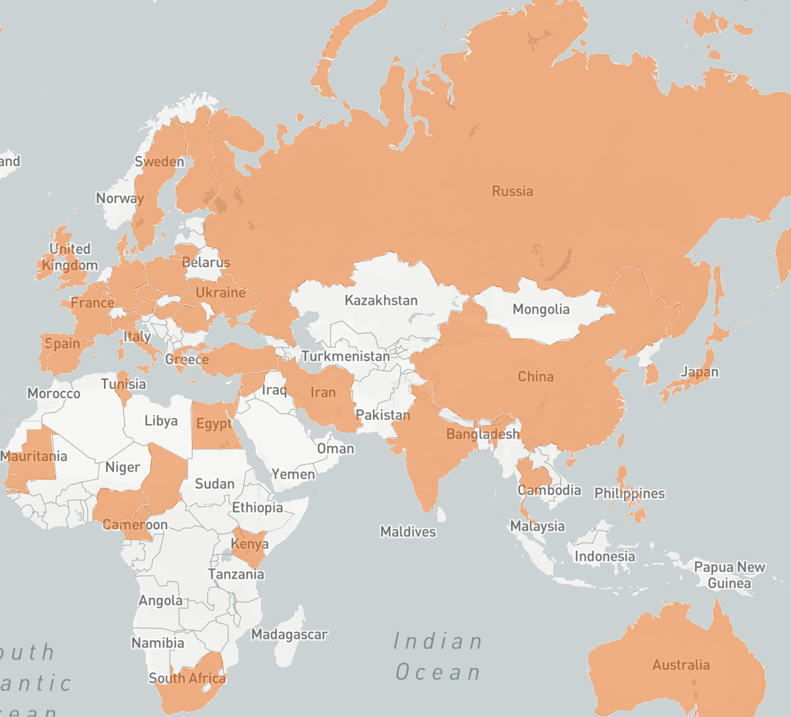

-
Columbia J-School
Ratings of Directors born outside the USIn this class project at the Columbia Journalism School, I used the BBC's 100 Greatest Movies of the 21st Century list to map each country (except US) by director and their ratings to see where the directors of the movies rated by critics in the list come from. This project required BeautifulSoup for multiple scraping pandas for analysis and mapbox for mapping.
-
BBC
 How Ghana is maximising profit from its cocoa industry
How Ghana is maximising profit from its cocoa industryGhana produces one-fifth of the world's cocoa, but gets only 2 per cent of the $100bn global chocolate market. I went to the cocoa producing region of Ghana in this TV report for the BBC to find out why and what the country is doing about this.